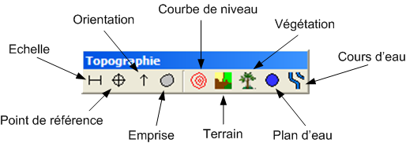
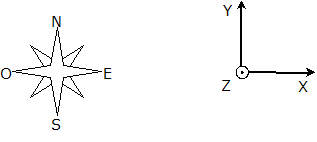

La barre d'outils Topographie est active uniquement avec les modeleurs de site ou projet.
Cet outils permet d'appliquer un facteur de redimensionnement au plan de masse du site.
Pour définir la position du plan de masse du site.
Pour définir l'orientation du plan de masse du site.

Cet outils permet de traver une polyligne délimitant l'emprise du site édité. Cette emprise est utilisé d'une part pour générer l'altimétrie s'il n'y a pas de courbe de niveau, et d'autre part pour l'imbrication de sites, seules les courbes de niveau présentent à l'intérieur de cette zone seront prises en compte dans le site parent.
Outils pour créer une polyligne représentant une courbe de niveau. Pour terminer la courbe, taper "Return", il suffit ensuite d'entrer l'altitude désirée.
Utilisez cet outils pour délimiter un terrain avec un sol particulier. Une fois la zone dessinée, et la touche "Return" entrée, il est possible d'éditer les paramètres du sol.
L'outils végétation construit un terrain recouvert d'une forêt.
Le plan d'eau se comporte comme une courbe de niveau fermée.
L'outils Cours d'eau permet de tracer une polyligne représentant un cours d'eau, il est possible de définir une largeur et des propriétés acoustiques à cet élément.